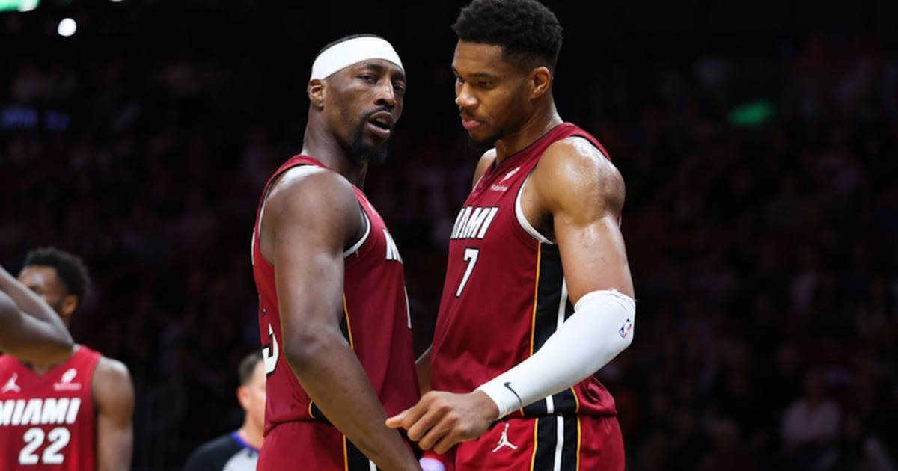

TSL Bets: Giannis OVER 40.5 points + rebounds (-114) vs Pistons — he just cleared it by 5.5 in this exact lineup
Giannis Antetokounmpo has cleared 40.5 combined points and rebounds in 8 of his last 10 games — including a 46 last night, in this same short-handed lineup, with Detroit's best rebounder out tonight. Take the over at -114.

The game
Detroit Pistons (8-3) at Miami Heat (6-6) — 8:00 PM ET, Kaseya Center, Miami, NBA TV
Pistons -4.5, total 229.5 (lines via Nathanite).
Injuries — Detroit: Jalen Duren is out with a right hamstring strain. Isaiah Joe is out with a right hip contusion.
Injuries — Miami: Giannis Antetokounmpo is probable through a wrist issue. Klay Thompson (ankle) and Pelle Larsson (illness) both sat out Friday, and Miami had not filed its Saturday report at publish time.
Storylines: Last night Giannis and Bam Adebayo each scored 37 against Cleveland — only the second Heat duo ever to both score 35-plus in the same game. Detroit is 8-3 behind Cade Cunningham, who put up the first 50-point, 10-assist, zero-turnover game in NBA history on Thursday. And Duren's absence matters for this bet: he is Detroit's best rebounder, and his minutes go to a thinner frontcourt against a player averaging 12.6 boards a night.
The bet
Giannis Antetokounmpo OVER 40.5 points + rebounds (-114, FanDuel). He has cleared this line in 8 of his last 10 games, and in 4 of his last 5. The game log reads 20, 43, 42, 49, 42, 41, 34, 43, 41, 46 — and that 46 came last night, in this exact short-handed lineup, against a Cleveland team that is better than Detroit on the glass. His season averages (27.7 points, 12.6 rebounds) add up to 40.3, right at the number, and the matchup tilts it over: no Duren, a back-to-back at home, and a player who just put up 37 and 9 the night before.
The honest caveat
The split that argues against this bet is real, and it is worth saying out loud: in the nine games Klay Thompson has missed, Giannis averages 25.8 points and 9.7 rebounds — 35.5 combined, well under this line. The trend and the lineup data disagree, and last night is the tiebreaker, not a guarantee. There is also blowout risk in both directions — Detroit is favored on the road, and if this game gets away from Miami early, Giannis could sit the fourth. This is a bet on the matchup and the form, not a lock.
The pick
Giannis OVER 40.5 points + rebounds (-114). A $10 ticket returns about $18.80.
If you or someone you know has a gambling problem, call 1-800-GAMBLER.
Sources
• Best NBA Player Props Today, November 14, 2026 (StatsBench)
• NBA injury report: Edwards, Lively, Duren out on Saturday, November 14 (TalkBasket)
• NBA lines, November 14, 2026 (Nathanite)
• NBA roundup: Heat pair combine for 74 points in win over Cavaliers (Reuters)